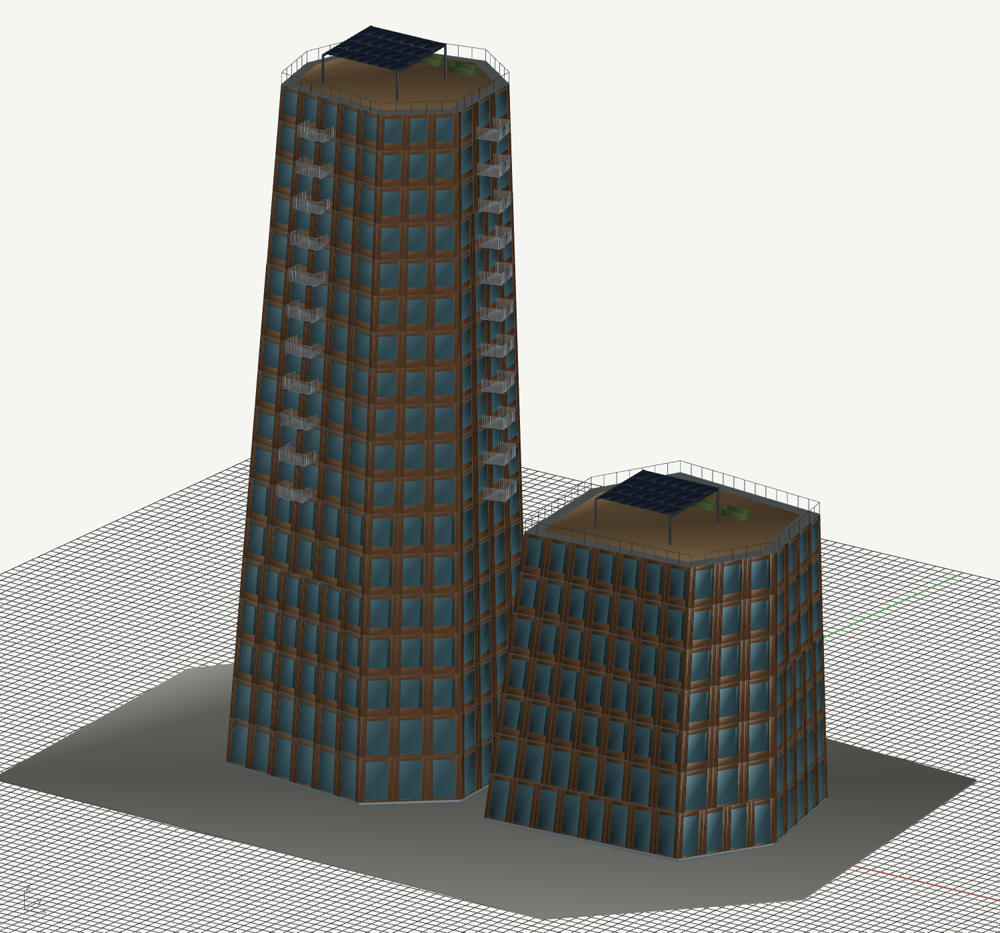
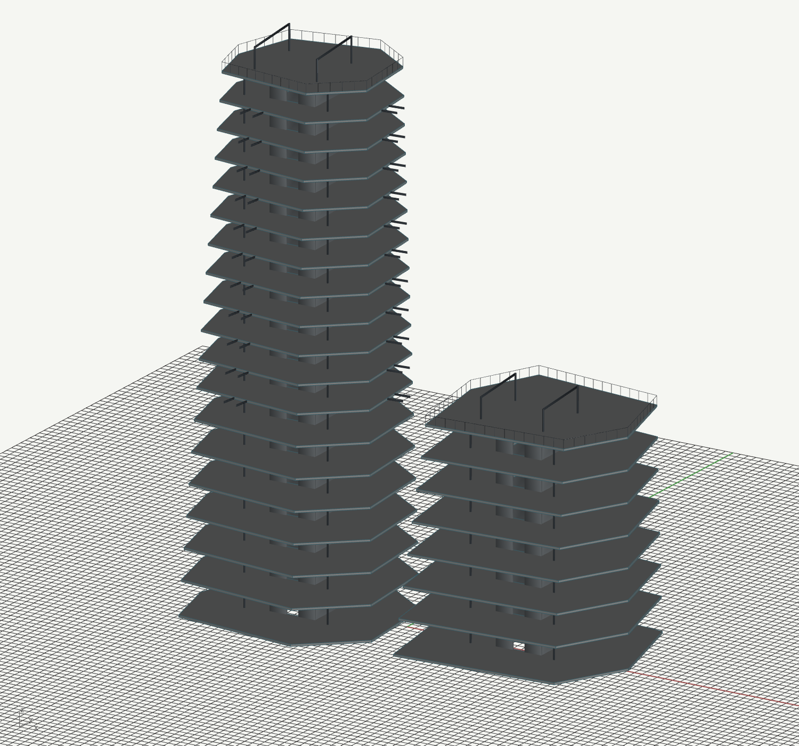
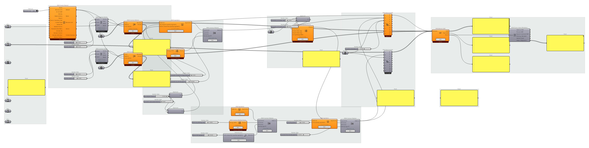

From building geometry to accountable elements


Partition once, assess transparently
Separate slabs, frames, glazing, cladding and layered walls. Resolve volume, length × section or reference area × thickness. Assign each physical part once, preserve object identity and exclude context geometry explicitly. Missing or incompatible element impacts prevent a complete building total.
Evidence boundary
The model README confirms geometry QA, not RAW calculation. The smaller wall study verifies recipe/assembly connections with missing impacts. This is a feasible integration direction, not verified whole-building GWP.
